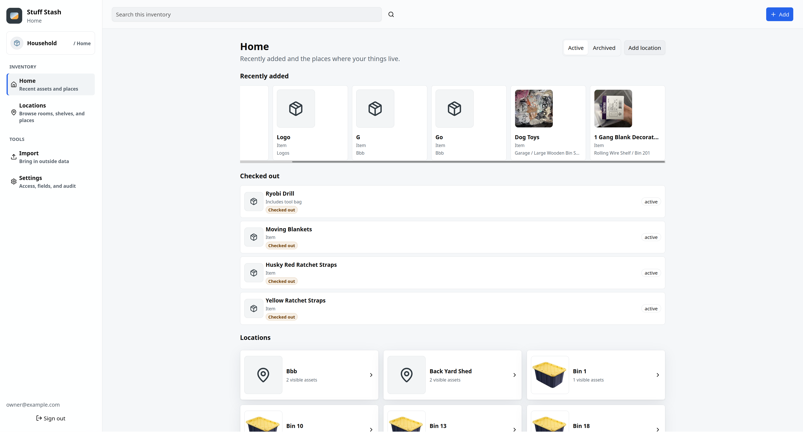

Stuff Stash
I built Stuff Stash because I wanted an inventory system but didn’t have time to maintain it.
While Stuff Stash can be maintained by clicking, tapping, and typing, I use the LLM-powered voice mode because I value my time.
I made this for me and my home. Stuff Stash might not be a good fit for you. That’s fine. You might consider HomeBox, Snipe-IT, or even Grocy.
Stuff Stash supports cloud and local models for text to speech, speech to text, and LLMs.
Screenshots
Section titled “Screenshots”…If you insist.
The design is subject to change (read: it absolutely will change, for the better.)
But why not share where I’m at:

Why It Exists
Section titled “Why It Exists”My previous inventory solution (shoutout HomeBox ❤️) was invaluable when I needed to find something I had in storage.
But when I needed to move things around, add new items, or lend something to a friend, it fell short.
It wasn’t for lack of functionality, but rather the friction was too high.
Core Tenets
Section titled “Core Tenets”- Low-friction upkeep: inventory lifecycle must be manageable with native voice control.
- Mobile App: the inventory must be manageable via a cross-platform native mobile app from day one.
- Local control: everything (even “AI” stuff) must work offline and be self-hostable.
- Native SSO (OIDC) Support: OIDC support must be natively integrated from the start.
- Multi-tenancy and sharing: a multi-tenant, inventory, and user model must be natively supported.
- Portable data: data must be easily imported and exported.
Start Here
Section titled “Start Here”If you want to see how to run Stuff Stash, start with Run Stuff Stash.
If you want to learn more about the internals, see What It Does.